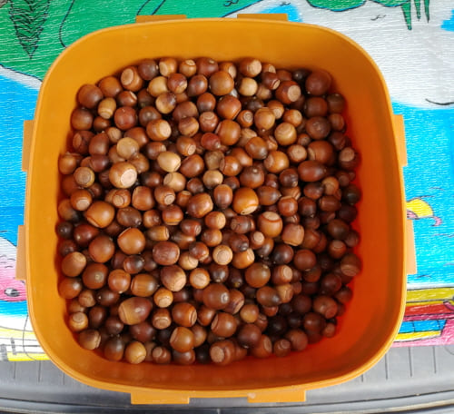
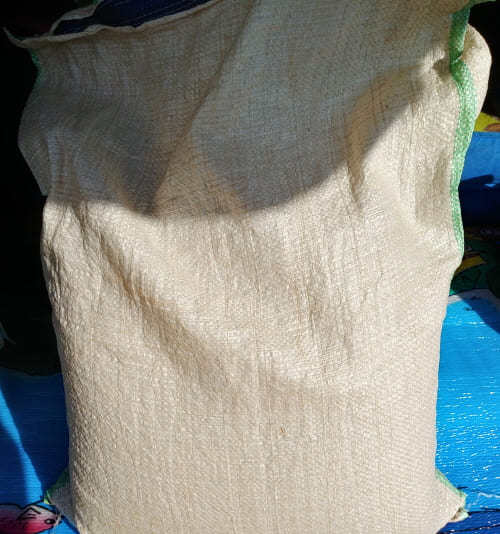
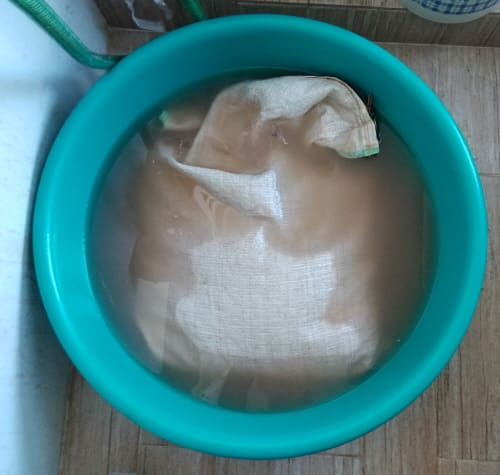
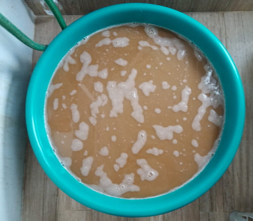
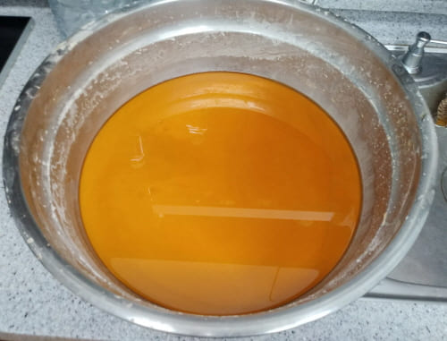

1. 도토리 묵 만들기
2. 도토리 떡 만들기
묵 만들기

1. 도토리 준비
다람쥐등 자연 및 동물 보호에 지장이 없는 곳에서 도토리를 채취해야 함

2. 방아간에서 껍칠채로 갈아서 포대에 담는다.
껍질채 하는 방법이 가장 쉽다 (껍질까서 하는 방법도 있다)

3.봉지를 물에 담근다
오래 동안 공기에 두면 안됨(20분이내가 좋다, 신선음식이라 부패할수 있음)

4. 포대속에서 가루만 빠지게 작업
껍질은 포대속에 남겨 따로 버린다

5.물속에 있는 가루를 침전시켜 물을 따라준다
침전시키기전에 다시한버 체에 걸러는 것이 좋다